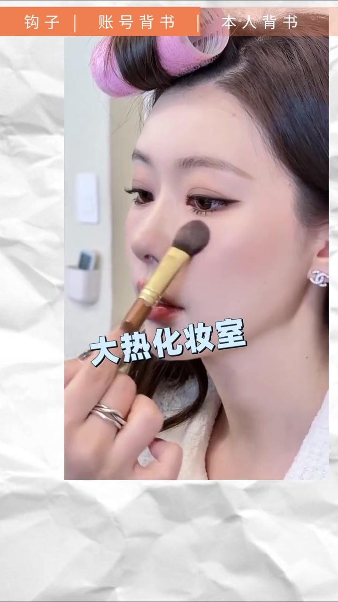

不是堆特效，而是先读懂口播在卖什么
这是一条剪辑拉片视频。讲述者以“我来拉，你来听”开场，选中一条美妆博主讲“去小韩怎么买不踩雷”的口播成片，边回放边指出：文案写好时剪辑已经想好；画面上的花字、叮声、缩小关键帧，都在服务三段结构——钩子、账号背书、本人背书。
说明：Whisper 固定按中文识别时，把“小韩就跟着我的攻略买 / 关键帧 / 新粉 / 抠像描边 / 把视频缩小 / 网感 / 大热化妆室测评 / 避雷 / 让你信服 / 底下 / 异曲同工 / 把握住”等词误听成“攻略码 / 关键针 / 兴奋 / 口想描边 / 说小 / 王感·往感 / 化妆师侧屏 / 闭雷 / 幸福 / 底线 / 一曲同工 / 拔握住”等。下文叙事以可见字幕与界面叠字为准，文末转录区仍完整保留全部原始分段。
先立规矩：拉片是最快提升方式之一
视频一开始，讲述者直视镜头说：拉片是提升剪辑水平最快的方式之一；“我来拉，你来听，今天我们拉”。随后立刻切到原片，顶部固定出现橙色结构条：钩子｜账号背书｜本人背书——整条视频都按这三格推进。
一句「跟着攻略买」把人留住
原片开场是美妆博主的口播：“小韩就跟着我的攻略买，绝对不会踩雷。”讲述者立刻打断标注：这是一个简单明瞭的钩子，直接把对这个话题感兴趣的粉丝留住。
“这里其实是一个简单明瞭的钩子，直接把对这个话题感兴趣的粉丝给留住。” — 约 00:10–00:16
他提醒一个细节：博主写文案时就已经构思好剪辑——字幕怎么进场、花字怎么配。回放里可以看到上方花字从左往右滑入，上下两行花字搭配入场动画，再加一个“叮”的音效，后面跟一个缩小的关键帧，顶部再叠一行“不会踩雷”。
攻略系列好评：两条作用一次说清
原片接下来说：“我的攻略系列已经收到现实里超级多好朋友的好评。”讲述者标注：这里其实是博主账号的背书，有两个作用。
第一，给看这条视频的新粉做账号自我介绍——你看一下我是干嘛的；感兴趣就可能点头像进主页、点关注。第二，对这一系列视频感兴趣的粉丝，会去主页继续找相关内容。
画面上，先是过往视频封面用关键帧从右往左推入；人像被抠出后，封面层放在人像后面；再把以前视频里的弹幕、评论截出来叠上去，加一个音效就够了——讲述者评价“简单直接好用”。
两层视频 + 抠像描边，做出一点网感
讲到“比较有网感”的段落时，讲述者拆步骤：先把视频分成两层；上面一层把人像抠出来，加抠像描边；后面一层加关键帧，把视频缩小——就会出现前景人像清晰、背景被推远的层次感；上面再放贴纸。
他把这段再套回“账号背书的两个作用”，强调：表现方式可以很多，只要把握住本质，这些效果自然会出来。随后再次回放“攻略系列好评”那句，让观众对照刚才讲过的两条作用。
立场标注：这里的“网感”是讲述者对剪辑观感的个人判断，不是可量化指标；视频用具体手法演示，但没有对照实验说明何种参数更“有网感”。
为什么我能站在这里讲
原片进入第三段：“作为超级会买韩系好用彩妆的本人，以及去过他们 90% 以上大热化妆室测评的我，再加上很 iPhone / IG / idol 演员化妆师同款的我……”
讲述者翻译意图：这是博主本人的背书——告诉你我为什么能站在这里讲如何去小韩买化妆品、避雷不踩坑。因为本人去过小韩、去过 90% 以上大热化妆品店、亲身测过，有经历、有背书，分享才让人信服。

枪械音效、慢放大，和弹幕同一种手法
回看音效与画面：底下再加一条花字、入场动画，搭配一个枪械音效；把以前去过门店的相关素材直接放上去，没有花里胡哨的特效。讲到 iPhone / IG / idol 演员化妆师同款时，画面有一个慢慢放大的效果——讲述者说这和“网感配音”异曲同工，更容易带入。
主页截图也是直接叠上去，和刚才弹幕一条条铺开的手法相似；下方再加“idol 演员化妆师同款”花字，这一段就结束。
花字可以换，本质不能丢
讲述者带着前面讲过的结构回头再看一遍，收束到核心句：只要把握住那个本质，上面的花字、效果、音效那些东西都可以换，可以发挥想象力；意思到了，效果就出来了。最后再回放本人背书金句，并以“这就是我们今天的拉片，有用的话点个关注”收尾。
“记住只要把握住那个本质，上面的花字、效果、音效那些东西都可以换……意思到了，效果就出来了。” — 约 03:36–03:47
这一趟拉片带走什么
一条美妆口播被拆成钩子留人、账号背书引流、本人背书建立信任；剪辑层负责花字入场、关键帧、抠像分层、弹幕/封面/主页截图和音效节奏。技巧可替换，三段说服结构才是讲述者说的“本质”。